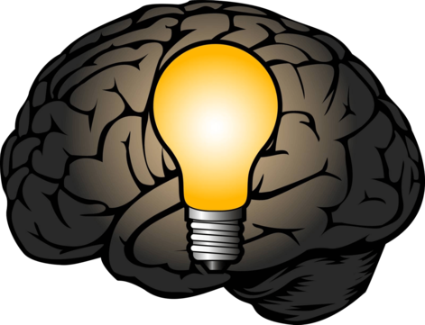

Module: Computational Thinking
Reflection
CMT-119
The Computational Thinking (CT) module has been very interesting
and educational. As a conversion student whose background is Law, I’ve had
to solve many legal problems in the past, and reflecting on what I’ve learnt
in this module makes me understand a different cognitive process on how
to solve problems. I am very aware that my understanding of CT is very basic
and rudimentary at the current time, but I can see its progression over time
and how this mindset is essential for success in our increasingly digitalized world.
Even though I wasn’t aware of what this process is formally named,
I’ve always been inherently practicing and refining my ability to
break down complex problems into smaller, manageable parts. However,
I now recognize the importance of this process, and recognize that it
is fundamental to apply it not only to coding tasks, but also to complex
theories in other courses, group tasks from other modules, etc. This systematic
approach simplifies problem-solving processes, but also helps me to resolve
bigger and complex concepts or data, allowing me to solve problems with
clarity and precision.

In the same way, pattern recognition -another pilar of CT-
has given me the ability to develop general solutions to specific problems,
by identifying similarities and recurring patterns across seemingly
different problems. Identifying patterns in data, and even in everyday
scenarios has become routinary to me. It enables me to create generalized
solutions that can be adapted to diverse problems. I feel a lot more comfortable
facing coding, mathematics and social problems in my day to day.
Furthermore, CT has taught me the importance of data representation
and analysis. This skill represents superlative importance in our society,
because it’s not just about creating and analyzing algorithms, it can also be
applied to other disciplines. It can be translated into processing data and deriving
meaningful insights from it, for example, I can see myself applying this tool into
learning new languages or business analytics.
I believe that understanding CT helps me to approach the
remainder of my program with logical thinking and confidence.
The analytical mindset, problem-solved abilities that I’ve been
taught here are invaluable assets that will shape my academic and professional
journey. I am now able to face the future subjects with a better
understanding on formal language, and in general, a strong analytical mindset,
that allows me to be an active problem-solver, creative thinker and analyst – all very
important to perform well in computer science.
In conclusion, the CT module has equipped me with important knowledge
that will serve as pillar to the rest of my academic journey. It has improved
the way I approach problem-solving, logical thinking, and most importantly, my
learning abilities.